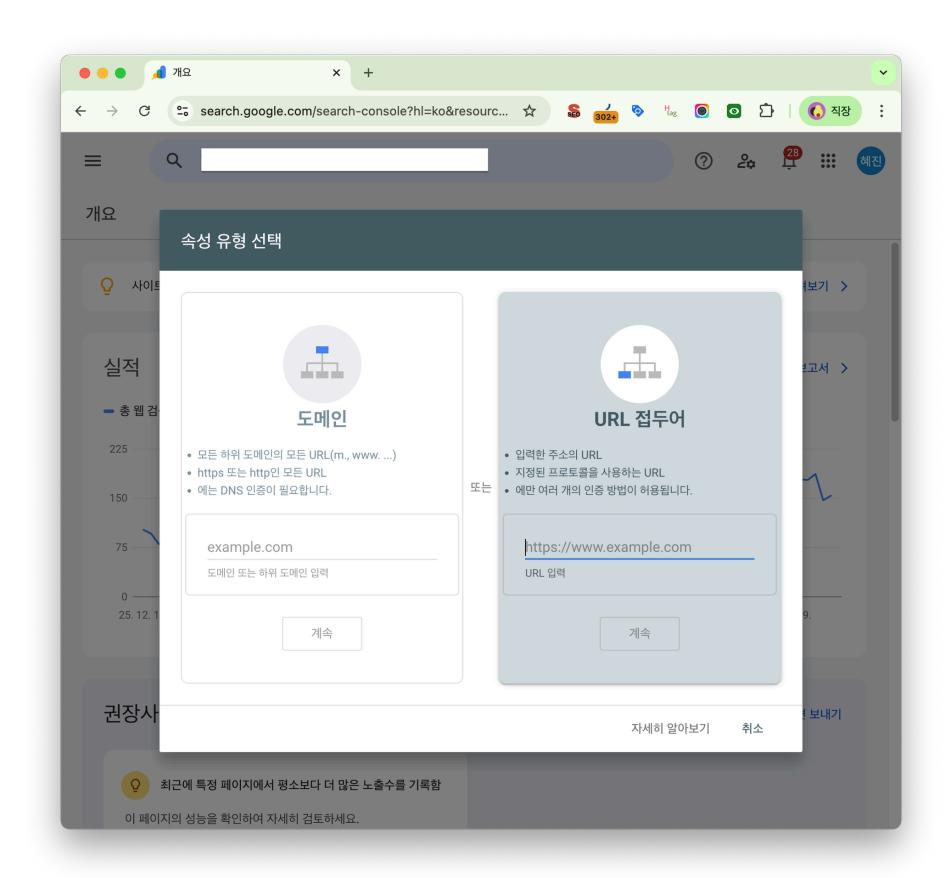
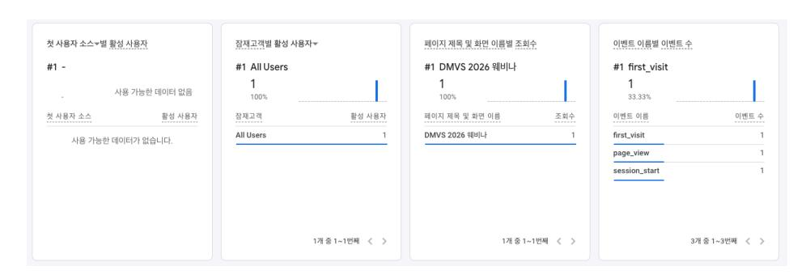
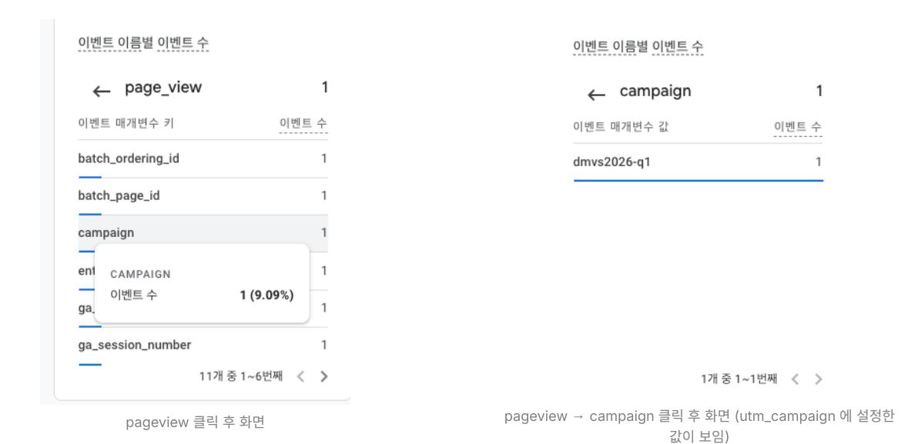
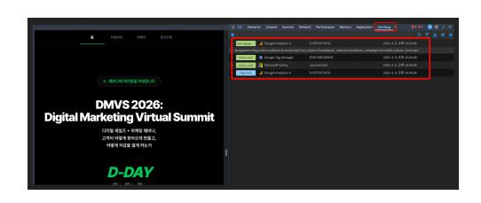

등록 이유: 전 세계 검색 트래픽 점유율 1위이며, Gemini(AI 검색) 결과에 내 사이트 정보를 가장 정확하게 전달하는 필수 도구입니다.
- 데이터 분리: 서브도메인 데이터와 섞이지 않아 메인 성과를 명확히 측정할 수 있습니다.
- 이슈 파악: URL별 에러 확인과 크롤 바젯(Crawl Budget) 관리가 용이합니다.
- 링크 거부: 악성 백링크로부터 사이트를 보호하는 '링크 거부 기능'은 URL 접두어 방식에서만 원활히 사용 가능합니다.

(주의사항 출처: threads @avcd.eee 계정)
등록 이유: 국내 검색 시장 점유율 1위입니다. 네이버에 등록되지 않으면 한국 내 잠재 고객의 50% 이상을 놓치는 것과 같습니다.
Bing은 전 세계 점유율 약 3~4%이지만, 북미 시장에서는 약 7~9%까지 상승합니다. 특히 AI 검색인 Copilot의 기반이 되므로 놓쳐선 안 될 시장입니다.
- 장점: Google Search Console과 연동하면 별도 인증 없이 클릭 몇 번으로 사이트 정보를 가져올 수 있습니다.
- 시너지: DuckDuckGo, Yahoo 등 다수의 검색엔진이 Bing의 인덱스를 공유하므로, 한 번의 등록으로 다중 채널 노출 효과를 얻을 수 있습니다.
등록 이유: 카카오톡 검색 및 국내 검색 엔진 유입을 최적화하기 위해 필수입니다.
핀터레스트는 SNS를 넘어선 '이미지 기반 검색 엔진'입니다. 한 번 세팅해두면 자고 있는 동안에도 트래픽을 가져다주는 자동 유입 통로가 됩니다.
- 비즈니스 계정 전환 (필수): 일반 계정보다 정교한 분석 기능을 제공합니다. 어떤 이미지가 클릭을 많이 유도했는지 데이터를 확인하고 콘텐츠 방향을 잡으세요.
- RSS 피드 연동을 통한 자동화: 블로그나 웹사이트의 RSS를 연동하면, 새 글이 올라올 때마다 자동으로 핀(Pin)이 생성됩니다. 매번 직접 올릴 필요 없이 콘텐츠 노출을 자동화할 수 있는 강력한 팁입니다.
- 보드(Board) 중심 큐레이션: 카테고리 성격에 맞는 '보드'를 만들고 관련 핀을 모으세요. 핀터레스트 내의 제목과 설명글은 구글 검색 결과에도 인덱싱되어 장기적인 외부 백링크 역할을 합니다.
- 콘텐츠 수명과 확장: 인스타그램과 달리 유입의 수명이 매우 깁니다. 꾸준히 보드를 업데이트하면 시간이 흐를수록 노출이 복리로 쌓여 폭발적인 유입을 만들어냅니다.
- analytics.google.com → 관리 → 속성 만들기
- 비즈니스 유형, 목표 선택 후 생성
- 측정 ID (G-XXXXXXXXXX) 복사해두기
직접 코드를 심는 것보다 GTM을 사용하면 개발자 없이 태그를 관리할 수 있어요.
- GTM → 새 태그 → Google 애널리틱스: GA4 구성
- 측정 ID 입력 → 트리거: All Pages → 저장 후 게시
GA4 설치 방법은 크게 두 가지가 있습니다. 반드시 둘 중 하나만 사용해야 하며, 두 개를 같이 설치하지 마세요.
1. gtag.js 직접 설치
2. GTM을 통한 설치
두 개 동시 설치 시, 데이터가 2배로 나타날 수 있습니다.
- 관리 → 속성 → 데이터 설정 → 데이터 수집 → Google 신호 데이터 활성화
- 구글 계정에 로그인한 사용자의 기기 간 이동을 추적할 수 있어요. 모바일로 들어왔다가 PC에서 전환하는 고객을 하나의 사람으로 인식해요.
- 관리 → 속성 → 데이터 설정 → 데이터 보존 → 14개월로 변경
- 기본값이 2개월이에요. 변경하지 않으면 탐색 분석(Explore)에서 2개월 이전 데이터가 사라져요. 반드시 바꾸세요.
- 관리 → 데이터 스트림 → 태그 설정 구성 → 내부 트래픽 정의 → 내 IP 주소 입력
- 내가 내 사이트를 방문하는 것이 데이터에 섞이지 않도록 제거하는 설정이에요.
아직 트래픽이 적은 상태라면, 보고 ID를 기기 기반으로 바꿔주세요.
관리 → 보고 ID → 모두 표시 → 기기 기반 선택
해당 설정은 Google의 신호데이터를 사용하지 않는 대신, 데이터 임계값을 피해줄 수 있어요. 크로스 디바이스 환경에는 약해질 수 있지만 데이터가 감춰지는 부분을 피할 수 있어요.
GA4는 기본적으로 페이지뷰, 스크롤, 클릭 등을 자동 수집해요. 하지만 "어떤 행동이 비즈니스에 중요한가"는 직접 전환으로 마킹해줘야 해요.
- 관리 → 이벤트 → 이벤트 목록에서 원하는 이벤트 옆 토글 → 전환으로 표시
전환으로 마킹해야 할 것들:
- 폼 제출 완료 (신청, 문의, 구매)
- 감사 페이지(Thank you page) 도달
- 특정 버튼 클릭 (전화 버튼, 카카오톡 버튼 등)
UTM 없이 링크를 공유하면 GA4에서 유입 경로가 (direct) / (none) 으로 잡혀요. 어느 채널이 실제로 효과 있는지 알 수 없게 돼요.
5가지 파라미터:
UTM을 사전정의한 사항으로 사용할 경우, 채널 분류가 자연스럽게 진행됩니다. 즉, 세부적인 데이터를 보지 않아도 채널이라는 큰 단위로서의 효율 확인에 용이합니다.
구글이 사전 정의한 이벤트명을 쓸 경우, 구글 애널리틱스의 데이터 보기를 더 원활하게 사용할 수 있어요. 예를 들어, 폼 제출을 generate_lead를 사용할 경우 보고서 → 비즈니스 목표 중 리드 생성 보고서에서 볼 수 있게 됩니다.
Google 추천 이벤트 목록 보기Google Ads를 GA4와 연결할 경우, 광고 데이터를 GA4에서 볼 수 있어요. 게다가 잠재고객을 Ads에서 활용할 수도 있어요.
- 관리 → 제품 링크 → Google Ads 링크
경로: 왼쪽 아래 ⚙️ 클릭 → 속성 설정 → 제품 링크 → Search Console 링크 → 연결
앞서 만든 Search Console 계정을 연결하면 [보고서] 탭에 Search Console이 생성됩니다.
Google Ads는 연결 전 데이터는 볼 수 없기 때문에 빠르게 연결하는게 좋습니다. Google Search Console은 연결 전 데이터도 볼 수 있으니, 급하진 않습니다.
왜 Ads는 이전 데이터를 볼 수 없을까?
Google Ads 데이터는 GA4와 연결 시, 실시간 동기화로 Analytics 서버에 데이터가 저장됩니다. 그렇기에 실시간 동기화가 되지 못한 과거 데이터는 볼 수 없죠. 반대로 Google Search Console(이하 GSC)은 실시간 동기화가 아닌 GA4가 GSC의 데이터를 단순 '조회'하는 역할입니다.
잠재고객은 이전 데이터를 기준으로 생성되는게 아닌, 설정한 시점부터 데이터가 쌓이게 됩니다. 그렇기에 가급적 미리 설정하는 것이 좋습니다.
- 관리 → 데이터 표시 → 구축 → 새 잠재고객
조건에 맞춘 고객을 분류화하고, 광고 모수로 사용할 수 있어요. 아직 조건을 고민하고 있다면 아래 조건을 만들어 놓아보세요:
- 회원가입 완료자 — 주요 타겟
- 세션 시간 3초(또는 그 이상) 이상 — 단순 유입이 아닌 모수
- 조회수 2회(또는 그 이상) 이상 — 단순 유입이 아닌 모수
- UTM 값 확인: [보고서] → 실시간 개요 → [이벤트 이름별 이벤트 수] 카드에서 pageview 이벤트 클릭 → campaign, medium, source, term 등 클릭 → 값 확인
- 이벤트 확인: [보고서] → 실시간 개요 → [이벤트 이름별 이벤트 수] 카드에서 확인


- 크롬에서만 작동하는 확장 프로그램입니다.
- 우리 사이트 뿐 아니라 존재하는 모든 사이트에 어떤 것이 깔려있고, 어떤 이벤트가 언제 발생하는지 확인할 수 있습니다.
- (omnibug 설치 후) F12 또는 개발자모드 진입 → Omnibug 탭 클릭 → 액션 수행

도입 이유: 구글 애널리틱스(GA4)가 "몇 명이 들어왔나"를 보여준다면, 클라리티는 "왜 나갔는가"를 시각적으로 보여줍니다.
- 주요 기능: 사용자의 움직임을 녹화하는 세션 기록, 클릭과 스크롤을 보여주는 히트맵 제공.
Meta Pixel(구 Facebook Pixel)은 Instagram과 Facebook 광고 캠페인의 성과를 추적하고 최적화하는 핵심 도구입니다. 웹사이트 방문자의 행동 데이터를 수집하여 리타겟팅 오디언스를 구축하고, 유사 타겟을 생성할 수 있습니다.
랜딩 페이지에서 리드를 수집하다 보면, 허위 이메일 주소를 남기는 방문자가 반드시 발생합니다. 마치 결제 보안을 위해 굳이 복잡한 비밀번호를 입력하는 깐깐한 사용자들처럼 말이죠.
- 전략: 리드 등록 직후, 감사 인사와 자료 링크가 담긴 자동 팔로업 메일을 즉시 발송하세요.
- 효과: 메일 전송 실패(Soft/Hard Bounce) 여부를 확인하여 가짜 데이터를 즉시 삭제할 수 있습니다. '진짜 사람'으로만 구성된 리스트는 향후 마케팅 효율을 200% 이상 상승시킵니다.
랜딩 페이지의 유일한 목표는 '전환'입니다. 고객이 폼을 채우기도 전에 다른 곳으로 눈을 돌리게 해서는 안 됩니다.
- 전략: 광고/PPC 전용 랜딩 페이지에서는 상단 네비게이션 메뉴와 외부 링크를 과감히 제거하세요.
- 효과: 불필요한 방해 요소를 없애면 고객은 '폼 작성'이라는 단 하나의 행동에만 집중하게 됩니다. 전환율은 이러한 사소한 디테일에서 결정됩니다.
한때는 구독자였으나 현재는 메시지에 전혀 반응하지 않는 '유령 구독자'는 장기적으로 브랜드에 해가 됩니다.
- 문제점: 반응 없는 이들에게 계속 메일을 보내는 것은 캠페인 성공률을 떨어뜨리고 데이터 분석 결과를 왜곡합니다.
- 전략: 일정 기간 클릭이나 오픈이 없는 리스트를 추출하여, 정기 발송 목록에서 과감히 제외하세요. 냉정한 정리가 건강한 도달률을 만듭니다.
가게 정보(소개글)에 내가 직접 쓴 내용과 함께, 고객이 남겨준 리뷰 속 단어도 검색 노출에 더 강력한 힘을 발휘합니다.(네이버도 동일)
- 리뷰는 검색엔진의 데이터 소스: 검색엔진은 고객 리뷰를 긁어와 내용을 분석합니다.
예시: 병원 정보에 '영어 진료'를 적어두지 않았더라도, 고객이 리뷰에 "영어 진료가 가능해서 편해요"라는 흔적을 남겨주면, 검색엔진은 이를 근거로 [강남 영어진료 병원] 검색 결과에 해당 병원을 노출시킵니다. - 구체적인 리뷰 유도: "맛있어요", "최고예요" 같은 단순 감탄사는 검색 데이터로서 가치가 낮습니다. "쌀빵 진짜 맛있어요. 아기랑 오기 너무 좋아요"처럼 메뉴명과 구체적인 상황이 담긴 리뷰를 고객이 남겨줄 때 노출 확률이 극대화됩니다.
- 언어별 노출 전략 (구글): 구글은 언어별 데이터를 별도로 분석합니다. 외국인 고객이 영어 리뷰로 'Vegan Bagel'이라는 단어를 많이 남겨주면, 영어로 검색하는 유저들에게 우선적으로 노출됩니다.
- 사장님 답글의 보조 역할: 만약 고객 리뷰에 핵심 키워드가 빠졌다면, 사장님이 답글을 통해 "저희 매장의 '비건 베이글'을 좋아해 주셔서 감사합니다!"와 같이 키워드 단서를 보강해 줄 수 있습니다.
(팁 출처: threads @avcd.eee 계정)
구글 비즈니스 프로필 마스터클래스 자료 링크네이버 플레이스는 단순히 등록하는 것을 넘어, '네이버가 신뢰할 수 있는 데이터'를 얼마나 촘촘하게 제공하느냐가 순위를 결정합니다.
- 정보 및 기능 풀 세팅: 운영시간, 메뉴, 찾아오는 길을 상세히 적는 것은 기본입니다. 여기에 스마트콜, 네이버 예약, 톡톡, 쿠폰 기능을 모두 활성화하여 고객의 체류 시간을 늘리세요. 네이버는 활동성이 높은 매장을 상단에 노출합니다.
- 유입 및 재방문 설계: 플레이스 광고와 SNS(인스타, 스레드) 유입을 병행하세요. 한 번 온 고객이 다시 오도록 리뷰 답글, 재방문 전용 쿠폰, 톡톡 마케팅을 활용해 선순환 구조를 만들어야 합니다.
- 세부 키워드 전략: '맛집' 같은 메인 키워드는 등락이 심하고 비용이 많이 듭니다. 검색량은 적어도 순위 유지가 쉬운 뾰족한 세부 키워드를 여러 개 확보하여 매출의 베이스를 만드세요.
- 중복 제거와 조합의 기술: 대표 키워드는 총 5개(각 15자) 설정 가능합니다. 네이버는 키워드를 교차 조합해서 인식하므로, 1번과 5번에 있는 단어가 합쳐져 검색 결과에 반영됩니다. 따라서 중복 단어를 넣지 말고 최대한 다양한 단어를 배치하세요.
- 행정명 인식의 비밀: 네이버가 인식하는 공식 행정명은 안 넣어도 자동으로 잡힙니다. 하지만 줄임말, 구 명칭, 대학교 앞 등 공식 명칭이 아닌 키워드는 반드시 대표 키워드에 수동으로 넣어줘야 합니다.
- 형태소 단위 체크: 키워드 등록 후 반드시 직접 검색해 보세요. 네이버가 단어를 끊어서 인식(형태소 분석)하는 단위가 내 의도와 다를 수 있습니다.
- 공급자 마인드 버리기: 내가 팔고 싶은 메뉴 이름이 '버럴떡'이라도 고객이 '버터떡'으로 검색한다면, 키워드는 반드시 '버터떡'으로 등록해야 합니다.
(팁 출처: threads @place_joe 계정)
- 등록 이유: 국내 모바일 메신저 점유율 1위인 카카오톡 내 '장소 공유' 및 검색과 연동됩니다. 한국 유저들이 맛집이나 장소를 찾을 때 네이버만큼이나 많이 사용하는 서비스입니다.
- 효과: 카카오톡 내비게이션, 카카오 택시 등 카카오의 모든 모바일 생태계에 내 비즈니스 위치 정보가 노출됩니다.
- 등록 이유: 북미권 유저들이 맛집이나 로컬 서비스를 찾을 때 가장 먼저 사용하는 플랫폼입니다. 특히 애플 지도(Apple Maps)와 야후(Yahoo) 검색 결과의 로컬 데이터는 대부분 Yelp 정보를 기반으로 노출됩니다.
- 효과: 아이폰 사용자들이 시리(Siri)나 지도를 통해 내 비즈니스를 찾을 때 정보가 누락되지 않도록 방어하고 유입을 극대화합니다.